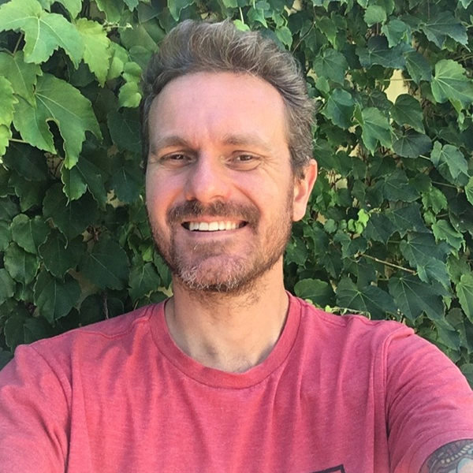
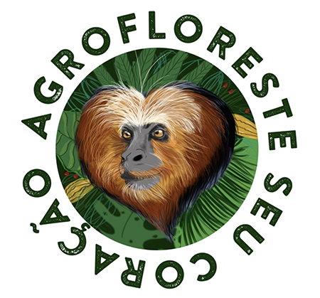

Olá, sou Paulo Zubiolo UX UI Design, Front-end Design.
Desde 2007, quando iniciei minha jornada como designer, e especialmente após me formar em Artes Visuais - Multimídia pela Universidade Norte do Paraná em 2009, encontrei minha verdadeira paixão: dar vida a ideias através do design. Sempre estive profundamente ligado às artes e suas nuances, e essa conexão me impulsiona a transformar conceitos em realidade. A possibilidade de impactar vidas através do UX/UI design e do Front-end é algo que me inspira diariamente. Para mim, não há limites quando se trata de tornar visíveis as ideias que habitam em nossas mentes. Ao longo da minha jornada, encontrei muitas pessoas compartilhando dessa mesma disposição, o que só reforça minha crença de que tudo é possível quando estamos dispostos a fazer dar certo. Estou entusiasmado para continuar minha jornada, criando experiências significativas e impactantes no mundo das conexões digitais.
Vamos conversar

Minha jornada profissional, até agora.
- 2007 - Estagio Icomp (Londrina) - Design e WEB Design - Primeiros passos como UX/UI
- 2008 - Estagio Tela Produtora (Rolândia) - Design, Editor de Vídeo, Fotógrafia em eventos, formação em Design multimídia deus espaços para experiências importantes para minha carreira.
- 2009 - Projeto Ilustres Idéias (Londrina) - Ilustrador, Auxiliar do projeto Aqui minha Orientadora Lara Gervásio Haddad meu deu a oportinidade de aprender muito sobre o mundo dos textos imagéticos e entender o que era ilustração de verdade, também colaborei com o projeto auxiliando nas aulas e com as turmas 2x por semana.
- 2010 - Sete Oito Marketing e Cominuacação (Londrina) - Ilustrador, Animação 2D, Relacinamento com cliente, Marketing... Junto com amigos nos aventuramos pela primeira vez em um negócio próprio, uma experiência incrível que durou 2anos.
- 2010/2011 - Professor de História da Arte e Artes (Londrina, Cambé) - Professor PSS, Estado do Paraná ensino, fundamental e mádio.
- 2012 - Ilustre Design (Rolândia) - Ilustrador, Animação 2D, Relacinamento com cliente, Marketing... - Na minha segunda jornada emrpresarial, A ilustre foi uma das mais intensas, Campanhas publicitárias, projetos proliticos partidários completos com filmagem, edição fotografia, TV, Rádio e tudo que uma agência pode oferecer, muitas noites sem dormir.
- 2014 - Designer de Multimídia (Londrina, Valinhos, SP) - Na Kroton Educacional minha experiênciacom UX/UI se aprofundou, colaborava com o time de desenvolvimento do LDD 4.0, um livro digital interativo, aqui desenvolvi Animações 2D, Design para Game, ilustrações ciêntificas.
- 2016 - Designer e social media - Na YAN Digitan, desenvolvia peças de design para uso em social media, gerencial e criava campanhas ADS, estratégias para alavancar a captura de leads para conversão em vendas.
- 2018/2021 - Coordenador de Marketing (Londrina) - Grupo Midiograf, Planejamento e coordenação de ações Inbound e Outbound marketing, planejamento estratégio para ações de comunicação e captação de Leads, eventos e Vendarketing. Direção de Arte e relacionamento com os clientes.
- 2021 - UX/UI Design (Remoto) - Digit Unit (UK), Construção de produto digital UX e UI design para software de pagamento fintech e cobrança.
- 2022/2023 - Product Design (Remoto) - Tmov / Sotran Design de interface e experiência do usuário, teste pesquisa e prototipagem para ecossistema de produtos logtech, atuando no Squad de Marketplace, Tmov Pay, Tmov Frotista, Tmov TMS.
- 2023 - Product Design (Prestação de serviço) - Rodo Safra Design alta fidelidade jornada de locais de embarque e desembraque.
- 2022/atual - Product Design (Prestação de serviço) - Farmbits / Belagrícola, Design de interface e experiencia do usuário e aplicação de pesquisas e prototipagem em projetos voltados para produtos digitais para empresas do ramo Agro e suas conexões.
Morador da cidade de Rolândia no Paraná, estou a poucas horas de Curitiba e São Paulo, estou aberto a jornadas híbridas, para distâncias acima de 200 km com 2 dias presenciais, e full time presencial para região Norte do Paraná.
Vamos conversar
Product Design experiências
Farmbits / Belagrícola
2022 / 2024
Estamos colaborando com o time de Produto e Desenvolvimento na criação de aplicativos e websites que servirão como ferramentas adicionais para os trabalhadores rurais. Com apenas um clique ou na palma da mão, essas soluções permitirão gerenciar e organizar suas propriedades rurais de forma eficiente.
Detalhes
Rodo Safra
2023 / 2023 - Projeto
Em conjunto com o time de Produto, desenhamos a jornada de cadastro de locais.
Detalhes

TMOV / Sotran
2022 / 2023
Durante minha atuação, colaborei em quatro diferentes squads, contribuindo para o desenho e a pesquisa dos seguintes projetos:
Plataforma TMS: Gestão de documentos e emissão para transporte de carga.
Marketplace: Melhoria e novas funcionalidades do sistema legado, além de pesquisa e aprimoramento de funcionalidades para os clientes.
Pagamento TMOV Pay: Desenvolvimento de formas de pagamento e monetização, colaboração na criação da jornada do PIX e outras opções de pagamento.
Plataforma Frotista: Divulgação de fretes para frotistas cadastrados, incluindo novas funcionalidades e melhoria dos fluxos.
Além disso, participei do Design System - EIXO TMOV, focando em componentes, testes e novas aplicações.
Detalhes

Digit Unit
2021 / 2021
Desenvolvemos o design de um aplicativo focado em pagamentos e cobranças no sistema "buy now, pay later", que tem crescido na Europa durante e após a pandemia.
Detalhes
Kroton Educaional / Cogna Educacional
2014 / 2016
Como designer generalista, colaborei na produção de micro interações, animações 2D, ilustrações didáticas, infográficos e design de personagens para games. Contribuí para um dos primeiros produtos digitais totalmente voltados para a educação: o Livro Didático Digital (LDD 4.0) da Kroton.
Detalhes
Todo dia é um bom dia para "Lutar" por uma causa justa.
Breve
